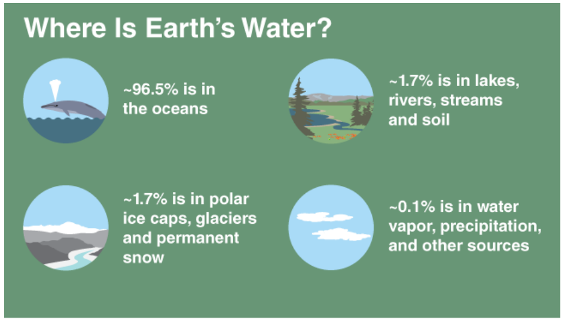
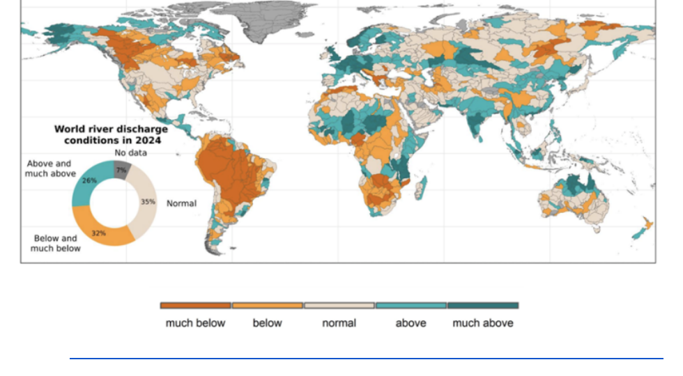

The Water Cycle
The path water takes as it moves around the planet.
🔑Key words
— No key words were listed in this section of the original document.
❓What is it?
Water cycle is the path that our water takes as it moves around the planet. Heat from sunlight causes the water to evaporate. Water from plants and trees can also evaporate this is called transpiration. (NASA) Over time, water vapor piles up in the atmosphere, resulting in clouds. When clouds get heavy they collapse into rain and other types of precipitation. (NASA) This water can be deposited to mountains or the ground. On mountains the water can turn into snow, which, through sublimation, can feed the ongoing cycle of rain. But water from mountains can also go down to the ground. This water can infiltrate the soil, causing it to pile up in groundwater reserves. Groundwater reserves can feed either rivers, restarting the cycle or can feed plants which too can restart the cycle. (NASA)
📊Data & Graphs


⚠️Problems
The World Meteorological Organization reports an overall imbalance in the world’s rivers. It is said that only one-third is normal, whilst the rest of the water resources are either above or below normal levels—marking the sixth consecutive year of clear imbalance. (World Meteorological Organisation 2024 also marked the year of again, great loss in ice resources. With an estimated 450 Gt lost. This amount is equivalent to 180 olympic swimming pools of water. (World Meteorological Organisation
✅Solutions
Solutions can be implemented at a small scale, to get a big changes. In your local ranch, you can ensure you have enough plants, to not put too much pressure on the local soil. (Ph.D, Charlie Graham) Adding more organic material to soil can help plan functions. When plants function correctly, the overall ground of soil, regains proper structure, to increase permeability (the ability to store more water) and infiltration, both needed for sustainable groundwater reserves, contributing for proper water cycle. Ph.D, Charlie Graham)
📚Sources
- kmansfield. “What Is the Water Cycle?” NASA Science, 16 Sept. 2025, science.nasa.gov/kids/earth/what-is-the-water-cycle/.
- World Meteorological Organisation. “From Drought to Deluge: WMO Report Highlights Increasingly Erratic Water Cycle.” World Meteorological Organization, 15 Sept. 2025, wmo.int/news/media-centre/from-drought-deluge-wmo-report-highlights-increasingly-erratic-water-cycle.
- Ph.D, Charlie Graham. “How Can I Tell If the Water Cycle Is Broken (and What Can I Do to Fix It?).” Noble Research Institute, 12 Sept. 2022, www.noble.org/regenerative-agriculture/how-can-i-tell-if-the-water-cycle-is-broken-and-what-can-i-do-to-fix-it/.